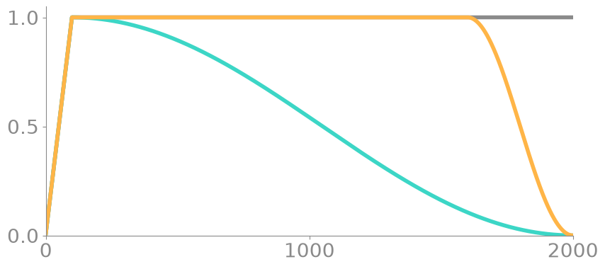
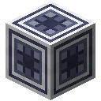
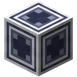
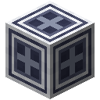

The Recipe
A model and a learning rate don't make a run yet. How the rate moves over thousands of steps, what the numbers are rounded to, what moves the weights and how the text is cut into rows all change what comes out. The old world's accounts of their largest runs seem to give all that as much room as the models.
The Core's Recipe tab holds it. Each part opens when a unit for it touches the Core, directly or through Accelerators and other units, and a unit lights up while a run uses it. The Fabricator makes each from a photomask of its spec.
| Unit | From | Opens |
|---|---|---|
| Scheduler | Schedule | Schedule, Warmup and Length |
| bf16 Unit | bf16 | bf16 under Precision |
| fp8 Unit | fp8 | fp8 under Precision |
| fp4 Unit | fp4 | both kinds of fp4 under Precision |
| Orthogonalizer | Orthogonalize | Muon under Optimizer |
| Packer | Document Mask | Packing |
With none of them a Core trains the plain way: 20 steps of warmup and a steady rate, in fp32, with AdamW, on windows of text.
The numbers below come from a model of two Transformer Blocks of width 32, reading the whole archive, unless they say otherwise. A model this small is noisy, and a few hundredths of a nat may be nothing but the start it had.
The rate over a run

Warmup raises the rate from nothing over its first W steps, while the weights are still random. Schedule then keeps it steady, lets it fall along half a cosine from the end of warmup, or holds it and lets it fall over the last fifth of the run. A schedule that falls has to know where it ends, so Length says how many steps the run lasts, and at that step it stops by itself. The tab draws the whole of it, with a line where the run has reached. Here is a run of 2,000 steps with 100 of warmup: steady in grey, the cosine in teal, the hold and fall in amber.

At a rate of 0.01, over 1,500 steps with 100 of warmup, the test loss came to 1.56 steady, 1.57 on the cosine and 1.49 held and then let fall, from one start each.
Spikes
A spike is a step whose loss leaps far above its recent average: half as much again, and a tenth more. The Train tab draws each as a red stroke up from the curve, and the Recipe tab counts them. Beside them it shows the largest attention score inside the model, which at these rates runs out past 100,000.
They come at rates far past the comfortable ones. At 0.3, over 300 steps, from three starts each:
| Warmup | Clip | Spikes | Highest loss | Best test loss | Last test loss |
|---|---|---|---|---|---|
| none | off | 1, 1, 0 | 9.3 | 2.94 | 2.95 |
| none | 1 | 0, 1, 0 | 11.4 | 3.01 | 3.01 |
| 100 | off | 12, 27, 5 | 17.5 | 2.45 | 3.05 |
| 100 | 1 | 1, 0, 0 | 3.9 | 2.45 | 3.02 |
With no warmup the first steps throw the run somewhere it never comes back from. With a warmup it gets further before the rate grows too large for it, and then it comes apart in spikes, and a clip takes nearly all of those away. Neither rescues a rate that is too large on every step. QK norm does: Modern Blocks at the same rate reach 2.0 with 20 steps of warmup, no clip and no spike. See The Modern Block.
Below that, warmup counts for more than the clip. At 0.1, from one start, the test loss after 500 steps is 2.84 with no warmup, and the largest attention score 245,000; with 100 steps of warmup it is 1.90, and the score 245. At 0.03 and 0.01 warmup hardly matters (1.80 against 1.79, 1.88 against 1.90), and a clip of 1 changed nothing at all, since no gradient was ever that long.
Precision
A float is a grid: in each power of 2 it has so many evenly spaced numbers, and rounding moves a number to the nearest of them.

| Format | A weight takes | In each power of 2 | Top |
|---|---|---|---|
| fp32 | 4 bytes | 8,388,608 | 3.4 × 10³⁸ |
| bf16 | 2 bytes | 128 | 3.4 × 10³⁸ |
| fp8 | 1 byte | 8 | 448 |
| fp4 | half a byte | 2 | 6 |

fp4 has eight sizes and nothing else: 0, 0.5, 1, 1.5, 2, 3, 4 and 6. Ranges that small need a scale: the tensor's largest size goes to the top of the grid and everything comes back by the same scale. That is all fp8 needs, though its gradients go back in a coarser grid with far more range, up to 57,344. In fp4 one loud number sends all the others to zero. fp4, in blocks gives every 16 numbers a scale of their own, kept in fp8, leaves the token tables and the last layer in fp8, and rounds gradients up or down by chance, so that small ones don't all vanish. fp4, one scale is the plain way.
Weights stay whole during a run, since a step smaller than a weight's spacing would vanish. On the way into every matrix multiply they are rounded, and so are the numbers they meet. The product comes out in bf16, and on the way back the gradient reaching it is rounded too. A rounding has no useful slope, so the gradient passes it as if it weren't there. Gains, offsets and temperatures stay in bf16. A saved model goes on answering in the format it was trained in.
What rounding does to a model's own numbers, 500 steps into a run:
| Format | Weights move by | Gradients move by | Gradient numbers lost to zero |
|---|---|---|---|
| bf16 | 0.17% | 0.17% | none |
| fp8 | 2.7% | 5.2% | none |
| fp4, one scale | 12% | 18% | 35% |
| fp4, in blocks | 9.5% | 13% | 9.3% |
And what that costs, at a rate of 0.003, from one start each:
| Format | Sorting at 600 steps | Reading at 1,000 steps | Its weights take |
|---|---|---|---|
| fp32 | 72% | 1.91 | 129 KB |
| bf16 | 76% | 1.91 | 65 KB |
| fp8 | 76% | 1.92 | 32 KB |
| fp4, one scale | 33% | 3.78, with 3 spikes | 16 KB |
| fp4, in blocks | 69% | 1.98 | 21 KB |
What a narrow format buys is room. An agent or a flight frame carries 160 KB of weights: 40,000 parameters in fp32, 160,000 in fp8. Two blocks of width 64 have 115,161 parameters, too many for fp32. In fp8 an agent can carry them in its head, with no Model Server and no relay.
Muon
AdamW scales each number's step by that number's own recent gradients, and knows nothing of the matrix it sits in. Muon moves a whole matrix at a time, along its momentum with every singular value brought to 1, so that no direction moves further than another. It doesn't take the matrix apart to do that. Scaled to a length of 1, since this only holds for singular values up to about 1, five of these steps bring them all there:
Then the matrix moves, with μ = 0.95 and λ = 0.01:
Only matrices inside the model go this way. Token and position tables, the last layer and all vectors stay with AdamW.
From one start each:
| Rate | Moved by | Sorting at 600 steps | Reading at 1,000 steps |
|---|---|---|---|
| 0.003 | AdamW | 72% | 1.91 |
| 0.003 | Muon | 76% | 1.84 |
| 0.01 | AdamW | 78% | 1.66 |
| 0.01 | Muon | 87% | 1.58 |
A step takes about as long either way.
Packing
Text from the ruins comes in pieces. What a shard has lost cuts a record into stretches, and a row of 64 tokens can't be cut from a stretch shorter than that, so windows, the plain way, never reads those at all. Of 300 records with 30% of their blocks lost, windows read 77% of what survives; with half lost 49%, and with 70% lost 21%. The tab's Text read says how much of what is in the data slots.
Packed fills each row with stretches one after another, and never scores the step from the end of one to the start of the next: 99% of a row's places still count. Attention can still look across those seams, though, and learn that a sentence runs on into one that has nothing to do with it. Packed, masked stops attention, delay lines and positions at each seam, so that nothing in a row can read one stretch with another.
On 300 records with 30% lost, at a rate of 0.003, from one start each, the test loss after 1,000 steps came to 1.87 on windows, 1.93 packed and 1.92 packed and masked. With three quarters of the text in reach, the rest adds little in so few steps. On 100 records with 70% lost, windows have 8,420 characters to read, and learn them by heart: the test loss falls to 2.34 and climbs back to 2.59. Packed rows reach 2.02, and masked ones 2.18, since no row shows them a long look back. What a mask buys is a model that never learned across a seam.
A second head
A Two-Token Head in place of a model's last Linear Layer learns the token after next beside the next, and adds 0.3 of that loss to the loss. The tab shows how often its first choice is right, which is how often it could spare a model the work of one token.
After 1,000 steps at a rate of 0.003, from one start, its first head scored a test loss of 1.88 beside 1.91 without one, too close to call. Its second head was right 30% of the time, and the first 44%. On models this small it is the second head itself that is worth having, not what it does for the first.
In PyTorch
torch.optim.lr_scheduler.CosineAnnealingLR(opt, T_max=T - W)torch.nn.utils.clip_grad_norm_(model.parameters(), 1.0)with torch.autocast("cuda", dtype=torch.bfloat16): ...torch.optim.Muon(hidden, lr=lr, momentum=0.95, nesterov=True, adjust_lr_fn="match_rms_adamw")




